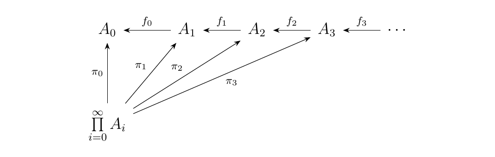
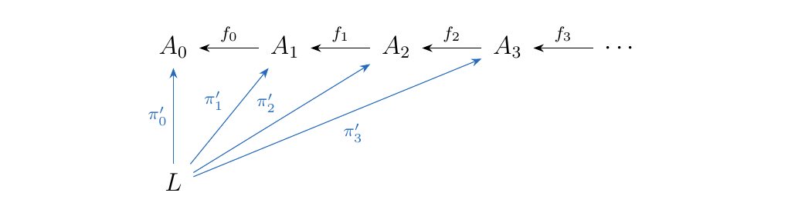
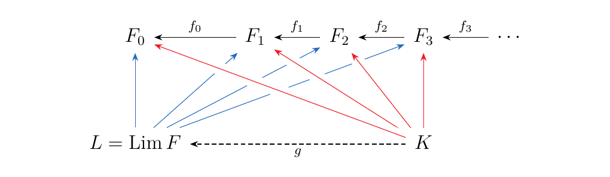
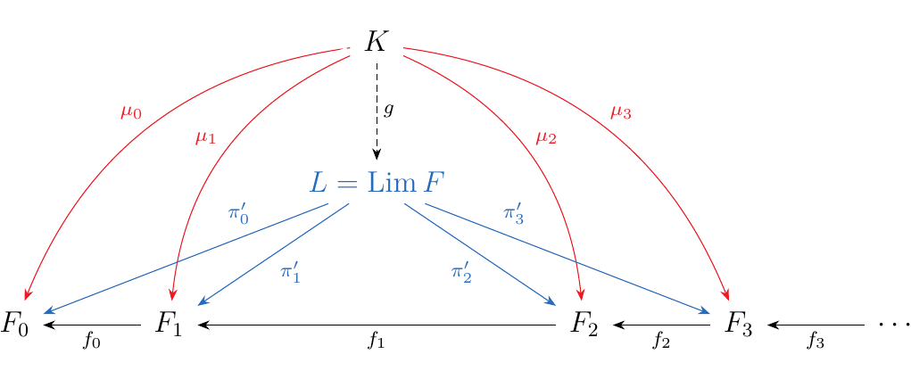
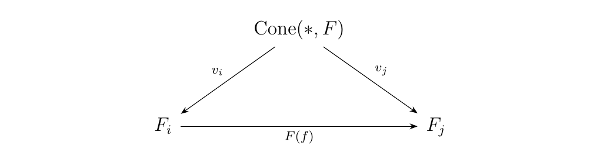
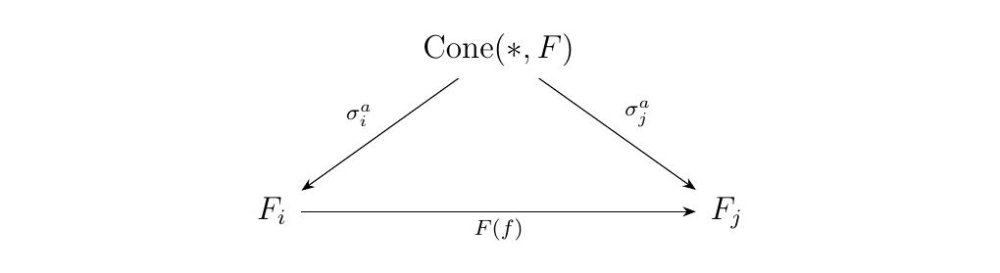
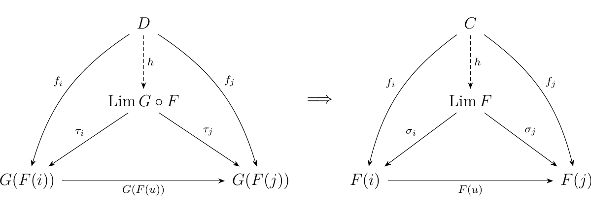
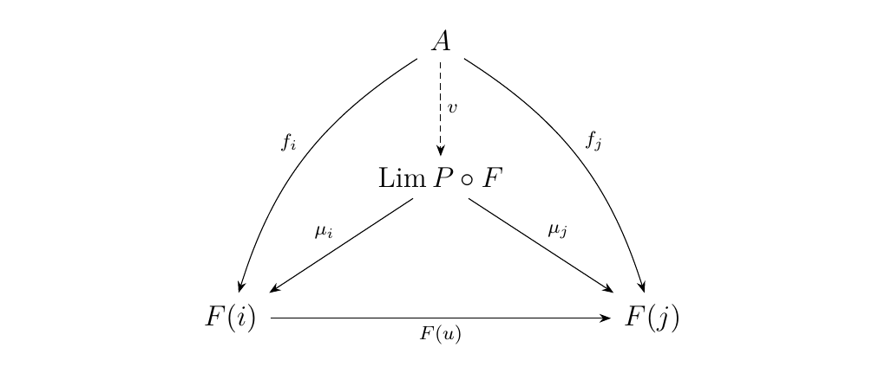

5.1. Every Limit in Set; Creation of Limits
While we have been discussing limits and colimits of functors, we generally
consider the case in which they exist. However, they sometimes don't exist; after all,
limits and colimits are universal objects.
Categories which do admit
these constructions are often convenient places to work inside of.
This is analogous to complete metric spaces \(X\),
where every Cauchy sequence is convergent in \(X\). With such an
analogy in mind, the following definition should make sense.
Let \(\cc\) be a category. We say \(\cc\) is complete if
all small diagrams in \(\cc\) has limits in \(\cc\); in other words,
if every functor \(F: J \to \cc\), where \(J\) is a small
category, has a limit in \(\cc\).
Similarly, we define:
Let \(\cc\) be a category. We say \(\cc\) is cocomplete if all small diagrams in \(\cc\) has colimits in \(\cc\). In other words, every functor \(F: J \to \cc\), where \(J\) is a small category, has a colimit in \(\cc\).
Now we show how to construct limits inside of Set, thereby showing that this category is complete.
For this example, let \(J = \omega\op\), where \(\omega\) is the preorder of natural numbers. Since we are asking for the opposite category, we reverse the arrows and get the diagram below.
Now suppose \(F: \omega\op \to **Set**\) is a functor. Then if we write \(F(i) = A_i\) with \(A_i \in **Set**\), then we see that the image of \(F\) is a family of sets \(F_n\) with functions \(f_{n}:A_{n+1} \to A_{n}\):
One way we could try forming a limit of this diagram is by constructing a cone, using the product of these sets.
 However, this isn't exactly what we want. A cone must form a commutative diagram and it's not always true that \(f_n \circ \pi_{n+1} = \pi_n\). So let's instead restrict our attention to a subset \(\displaystyle L \subset \prod_{i = 0}A_i\) where the points \((a_0, a_1, \dots, a_n, \dots)\) do satisfy this relation.
and equip \(L\) with the functions \(\pi'_{n}\) where
where \(i: L \to \prod\limits_{i = 1}^{\infty} F_i\) is the inclusion function. Then we have
 so that \(L\) forms a cone. We now prove that this cone is universal.
The set \(L\) is the limit of the functor \(F: \omega\op \to **Set**\).
Suppose \(K\) is another cone over our diagram, equipped with morphisms \(\textcolor{Red}{\mu_n}: K \to F_n\). Since this is another cone, we have that \(f_n \circ \mu_{n+1} = \mu_n\). Now let \(k \in K\). Then we can form an element
since each \(\mu_n(k) \in F_n\). Now observe that
Thus we see that \(f_n \circ \pi_{n+1}(x) = \pi_n(x)\), so that by definition, \(x \in L\). Hence we can create a unique function \(g: K \to L\) where for each \(k \in K\),
so we then have that
Hence, this shows that \((L, \pi_n: L \to F_n)\) is universal, so that \(L = \Lim F\)!

If we want to view this in terms of the spider diagrams, then we have

Here, we've taken a nice, simple diagram \(F: \omega\op \to **Set**\) and shown that there exists a limit \(L\) of the diagram inside of \(**Set**\). However, we can do this more generally, so that Set is complete. To illustrate this we need the notion of a set of cones.
Note that in the last example, we can actually think of each \(x = (x_0, x_1, x_2, \dots) \in \Lim F\) as a cone. How so?
-
[1.] For each \(x = (x_0, x_1, x_2, \dots) \in \Lim F\), consider the one-point set \(\{*\}\).
-
[2.] Associate \(\{*\}\) with the family of functions \(\pi^*_n: \{*\} \to F_n\), defined as
Now since \(x \in \Lim F\), we know that \(f_n(x_{n+1}) = x_{n}\). But, note that this is equivalent to stating that \(f_n \circ \pi_{n+1}(*) = \pi_{n-1}(*)\). Therefore the diagram
commutes for every \(f_n: F_{n+1} \to F_n\), so that's how we can regard every \(x \in \Lim F\) as a cone. Therefore, if we denote \(\cone(*, F)\) as the set of all cones of \(\{*\}\) over \(F\), we see that \(\cone(*, F) = \Lim F\).
The category Set is complete. That is, if \(J\) is a small category, every functor \(F: J \to **Set**\) has a limit
where \(\cone(*, F)\) is the set of all cones of \(\{*\}\) over \(F\). The set \(\cone(*, F)\) forms the limit cone with the morphisms \(v_i: \cone(*, F) \to F_i\) described as follows. If \(x \in \cone(*, F)\), then \(x\) has a family of morphisms \(\sigma^x_i: \{*\} \to F_i\). Therefore,
\vspace{-0.8cm}
First, since \(J\) is small, we know that \(\cone(*, F)\) is a set. For each \(j \in J\), establish the morphism \(v_j: \cone(*, F) \to F_j\) where \(v_j(x) = \sigma^x_j(x)\), and \(\sigma^x_j: \{*\} \to F_j\) is the morphism associated with \(x\) as a cone over \(F\).
We now show that it is a cone. Suppose \(f: i \to j\) is a morphism in \(J\). Then observe that \(F(f) \circ v_i(x) = F(f) \circ \sigma^x_i(x) = \sigma^x_j(x) = v_j(x)\). Hence the diagram
 commutes, so \(\cone(*, F)\) really does form a cone over \(F\). To show this is universal, and hence our limit, suppose that \(A\) in Set also forms a cone over \(F\) with morphisms \(\tau_j: X \to F_j\). Note that for each \(a \in A\), we can form a cone from \(\{*\}\) to \(F\), if we define \(\sigma^a_j: \{*\} \to F_j\) as \(\sigma^a_j(*) = \tau_j(a)\). Then the diagram
 must also commutes since it commutes for each \(\tau_j\). Thus we can define a unique function \(g: A \to \cone(*, F)\), where each point \(a\) is sent to the cone which it forms from \(\{*\}\) over \(F\). Therefore, \(\cone(*, F)\) is universal, so that
as desired.
The above proof can be repeated to show that others categories are complete, like Grp or Rng.
In attempting to find the limit \(F: J \to \cc\) in some category \(\cc\), one strategy is to to compose this functor with another one \(G: \cc \to \dd\), with the prior knowledge that \(\dd\) is complete. If one knows \(\dd\) is complete, one then use this information to find the limit of \(F: J \to \cc\).
Let \(F: J \to \cc\) be a functor. A functor \(G: \cc \to \dd\) creates limits for \(F\) if whenever \((\Lim G \circ F, \tau: \Delta(\Lim G \circ F) \to G \circ F)\) exists, the limit \((\Lim F, \sigma: \Delta(\Lim F) \to F)\) such that
Similarly, a functor \(G: \cc \to \dd\) creates colimits for \(F\) if whenever \((\Colim G \circ F, \tau: G \circ F \to \Delta(\Lim G \circ F)\) exists, the colimit \((\Colim F, \sigma: F \to \Delta(\Colim F)\) exists and
The diagram below visually explains this process; the existence of limit in \(\dd\) on the left implies the existence of the limit in \(\cc\) on the right. Moreover, the diagram on the left is the image of the diagram on the right under \(G\).

Consider a functor \(F: J \to **Grp**\). We'll show that the forgetful functor \(U:**Grp** \to **Set**\) creates limits for \(**Grp**\).
By the previous theorem, we know that \(U \circ F; J \to **Set**\) must have a limit \(\cone(*, U \circ F)\) with the family of morphisms \(v_i: \cone(*, U\circ F) \to U\circ F_i\). Now denote the set \(\cone(*,U \circ F)\) as \(L\). Then we can endow \(L\) with a group structure.
-
For any \(\sigma, \tau \in L\), we define \(\sigma \times \tau\) to be the cone where \((\sigma \times \tau)_i = \sigma_i \cdot \tau_i\), where \(\cdot\) is the product in \(F_i\).
-
For \(\sigma \in L\), we define the inverse to be
the function \(\sigma^{-1}\) where \((\sigma^{-1})_i = \sigma_i^{-1}\), with the inverse being taken in \(F_i\).
All we're really doing here is taking advantage of the fact that each \(\sigma, \tau\) is really just a family of functions \(\sigma_i, \tau_i: \{*\} \to F_i\). Thus we're taking advantage of the group structure in each \(F_i\).
Thus \(L = \cone(*, U \circ F)\) is a group, which then makes the family of morphisms \(v_i: \cone(*, U \circ F)\) into a family of group homomorphisms. To show this, simply observe that
Now we claim that the cone \(\cone(*, U \circ F)\) with the morphisms \(v_i: \cone(*, U \circ F) \to F_i\) is universal. To show this, let \(G\) be a group and suppose \(G\) forms a cone over \(F\) with morphisms \(\phi_i: G \to F_i\). Then \(U(G)\) forms a cone over \(\cone(*, U \circ F)\) in Set with morphisms \(U(\phi_i): U(G) \to U(F_i)\).
Since we know \(\cone(*, U \circ F)\) is a universal cone in Set, there exists a \(h: U(G) \to L\) such that \(U(\phi_i) = U(v_i)\circ h_i\). However, note that \(h\) can be thought of as a group homomorphism. For any \(g, g' \in G\), we have
Therefore, \(h:U(G) \to L\) can be realized back into Grp as a group homomorphism \(h: G \to L\), thereby showing \(\cone(*, U \circ F)\) is a universal cone in Grp. This is one way in showing Grp is complete. What we really did in the last example was nothing special. Using the fact that Set is complete, we transferred \(F: J \to **Grp**\) over to Set via the forgetful functor \(U: **Grp** \to **Set**\). We calculated the limit, and showed that this can be realized as a limit in Grp. In this sense, \(U: **Grp** \to **Set**\) creates limits in Grp. A similar strategy can be carried out for other forgetful functors.
Let \(\cc\) be a category and \(A\) an object of \(\cc\). Recall that with the comma category \((A \downarrow \cc)\), we have a projection functor \(P: (A \downarrow \cc) \to \cc\) where on objects \((C, f: A \to C)\) and morphisms \(h: (C, f: A \to C) \to (C', f: A \to C')\) we have that
Now for any functor \(F:J \to (A \downarrow \cc)\), the functor \(P: (A \downarrow \cc) \to \cc\) creates limits. To see this, we first interpret a functor \(F: J \to (A \downarrow \cc)\). For each \(j\), we have that
for some \(C_j \in \cc\) and \(f_j: A \to C_j\). If \(u: j \to k\) is a morphism in
\(J\), then \(F(u) : C_j \to C_k\) is a morphism in \(\cc\)
such that the diagram below commutes (as, that's what morphisms
do in comma categories).
 Note that this is a cone over \(F\) in \(\cc\).
Now suppose we have a limit \(\Lim P \circ F\) in \(\cc\) with
morphisms \(\mu_i: \Lim P \circ F \to C_i\) with \(i \in J\).
Then because \(\Lim P \circ F\) is a limiting cone, and we must
have a unique \(v\) such that the diagram below commutes.
Note that this is a cone over \(F\) in \(\cc\).
Now suppose we have a limit \(\Lim P \circ F\) in \(\cc\) with
morphisms \(\mu_i: \Lim P \circ F \to C_i\) with \(i \in J\).
Then because \(\Lim P \circ F\) is a limiting cone, and we must
have a unique \(v\) such that the diagram below commutes.
 The claim now is that \((\Lim P \circ F, v: A \to \Lim P \circ F)\) is the limit \(\Lim F\) of \(F: J \to (A \downarrow \cc)\), which is left for the reader to show.
{\large Exercises \vspace{0.2cm}}
-
[1.] \begin{itemize}
-
[i.] Let \(J = \omega\), and let \(F: J \to **Set**\) be a functor were \(F(i) = A_i\). Show that \(\Colim F\) exists and give an expicit description of it. \ Hint: It will be a set endowed with an equivalence relation.
-
[ii.] How does your answer chance when \(F: J \to **Set**\) is contravariant?
\end{itemize}